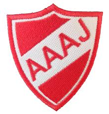

¡Informate y pensá en la oportunidad de registrarte para probarte en el Semillero del Mundo y ser la próxima estrella!
Argentinos Juniors, una vez más, abre sus puertas a todo chico que quiera probar su talento en el deporte rey, y qué mejor lugar que EL SEMILLERO DEL MUNDO.
Por si no sabían, de este club salieron muchos de los grandes jugadores argentinos que el fútbol nos dio: Maradona, Riquelme, Redondo, Cambiasso, Mac Allister, Sorín, Borghi, Nico González, entre otras estrellas.
Es un club que se caracteriza por ser de lo mejor en inferiores del país. Siempre da acceso a todo joven que quiera jugar y destacar, sea de donde sea. Es un club que parece familia, y que siempre te va a tratar de 10.
Abiertas las pruebas para todas las edades. ¡Registrese en la pestaña de arriba o aqui abajo! Se lo contactará a la brevedad.
Quiero registrarme